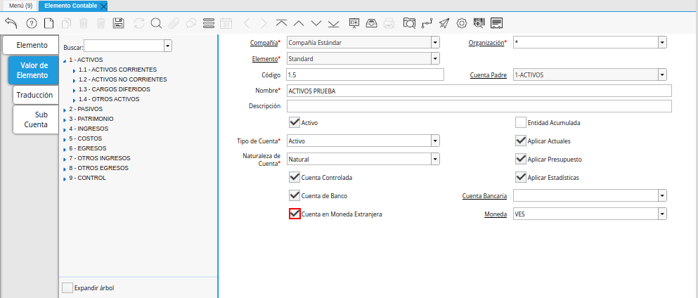
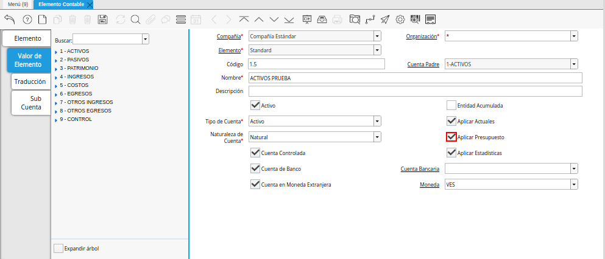
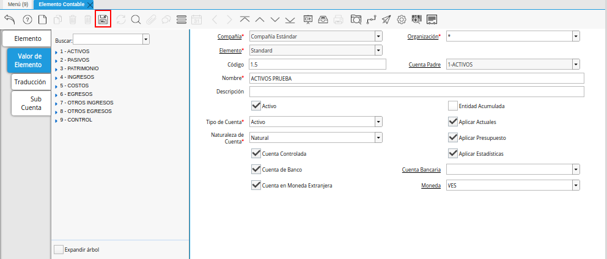

Registro de Elemento Contable
Ubique y seleccione en el menú de ADempiere, la carpeta “Análisis de Desempeño”, luego seleccione la carpeta “Reglas Contables”, por último seleccione la ventana “Elemento Contable”.
Imagen 1. Menú de ADempiere

Podrá visualizar la ventana “Elemento Contable”, con los diferentes registros de elementos contables que posee la misma.
Imagen 2. Ventana Elemento Contable
Seleccione la pestaña “Valor de Elemento”, para crear un nuevo registro de valor en el elemento contable.
Imagen 3. Pestaña Valor de Elemento
Luego de ubicarse en el registro del valor del elemento, seleccione el icono “Registro Nuevo”, para crear un nuevo registro de valor del elemento.
Imagen 4. Icono Registro Nuevo de la Pestaña Valor de Elemento de la Ventana Elemento Contable
Seleccione en el campo “Organización”, la organización para la cual esta realizando el registro.
Imagen 5. Campo Organización de la Pestaña Valor de Elemento de la Ventana Elemento Contable
Introduzca en el campo “Código”, el código correspondiente al registro que esta realizando.
Imagen 6. Campo Código de la Pestaña Valor de Elemento de la Ventana Elemento Contable
Introduzca en el campo “Cuenta Padre”, la cuenta padre correspondiente al registro que esta realizando.
Imagen 7. Campo Cuenta Padre de la Pestaña Valor de Elemento de la Ventana Elemento Contable
Introduzca en el campo “Nombre”, el nombre correspondiente al registro que esta realizando.
Imagen 8. Campo Nombre de la Pestaña Valor de Elemento de la Ventana Elemento Contable
Introduzca en el campo “Descripción”, la descripción correspondiente al registro que esta realizando.
Imagen 9. Campo Descripción de la Pestaña Valor de Elemento de la Ventana Elemento Contable
Introduzca en el campo “Tipo de Cuenta”, el tipo de cuenta correspondiente al registro que esta realizando.
Imagen 10. Campo Tipo de Cuenta de la Pestaña Valor de Elemento de la Ventana Elemento Contable
Introduzca en el campo “Naturaleza de Cuenta”, la naturaleza de la cuenta correspondiente al registro que esta realizando.
Imagen 11. Campo Naturaleza de Cuenta de la Pestaña Valor de Elemento de la Ventana Elemento Contable
Seleccione el checklist “Cuenta Controlada”, para indicar que la cuenta en la cual será utilizado este registro, es una cuenta controlada.
Imagen 12. Checklist Cuenta Controlada de la Pestaña Valor de Elemento de la Ventana Elemento Contable
Seleccione el checklist “Cuenta de Banco”, para indicar que la cuenta en la cual será utilizado este registro, es una cuenta de banco.
Imagen 13. Checklist Cuenta de Banco de la Pestaña Valor de Elemento de la Ventana Elemento Contable
Al tildar el checklist “Cuenta de Banco”, es habilitado el campo “Cuenta Bancaria”.
Imagen 14. Campo Cuenta Bancaria de la Pestaña Valor de Elemento de la Ventana Elemento Contable
Seleccione el checklist “Cuenta en Moneda Extranjera”, para indicar que la cuenta en la cual será utilizado este registro, es una cuenta en moneda extranjera.

Imagen 15. Checklist Cuenta en Moneda Extranjera de la Pestaña Valor de Elemento de la Ventana Elemento Contable
Al tildar el checklist “Cuenta en Moneda Extranjera”, es habilitado el campo “Moneda”.
Imagen 16. Campo Moneda de la Pestaña Valor de Elemento de la Ventana Elemento Contable
Seleccione el checklist “Entidad Acumulada”, para indicar que la cuenta en la cual será utilizado este registro, es una cuenta sumaria.
Imagen 17. Checklist Entidad Acumulada de la Pestaña Valor de Elemento de la Ventana Elemento Contable
Note
La selección de este checklist, oculta la visibilidad de los demas checklist que se encuentran en la pestaña “Valor de Elemento”.
Seleccione el checklist “Aplicar Actuales”, para indicar que la cuenta en la cual será utilizado este registro, los valores acutales pueden ser contabilizados.
Imagen 18. Checklist Aplicar Actuales de la Pestaña Valor de Elemento de la Ventana Elemento Contable
Seleccione el checklist “Aplicar Presupuesto”, para indicar que la cuenta en la cual será utilizado este registro, los valores del presupuesto pueden ser aplicados.

Imagen 19. Checklist Aplicar Presupuesto de la Pestaña Valor de Elemento de la Ventana Elemento Contable
Seleccione el checklist “Aplicar Estadísticas”, para indicar que serán registradas las cantidades estadísticas en la cuenta en la cual sea utilizado este registro.
Imagen 20. Checklist Aplicar Estadística de la Pestaña Valor de Elemento de la Ventana Elemento Contable
Seleccione el icono “Guardar Cambios”, ubicado en la barra de herramientas de ADempiere, para guardar el registro de los campos de la pestaña “Valor de Elemento”.

Imagen 21. Icono Guardar Cambios de la Pestaña Valor de Elemento de la Ventana Elemento Contable